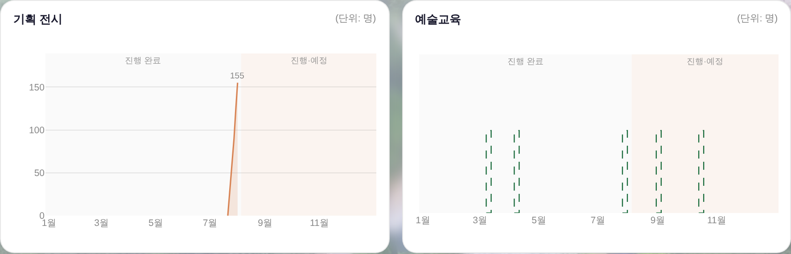
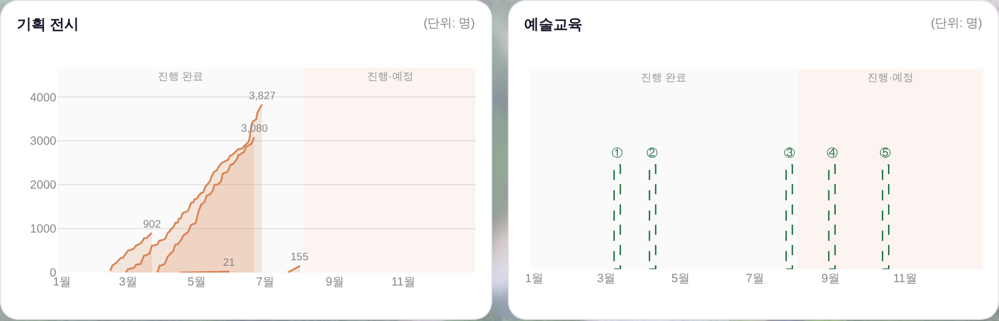

기획 전시 상반기 거울 합류 · 예술교육 색인 (전후)
260805 운영자 지시: 「깃에 넣어둔 전시 실적(2026 기획전시 일일실적내역.xlsx)으로 상반기도 채워줘 · 교육은 별도의 인덱싱 열 부여」.
전시 원본 127개 일자 시트(0213~0805)를 tools/build_exhib_daily.py가 파싱 → 기계산출물 거울 data/exhib_daily_2026.js 생성(손편집 금지 · 재실행 재생성). 전시DB(전시마스터·전시일일)가 정본 — 거울은 DB에 없는 전시만 보충(「숨 쉬는 SUM」은 DB 정본 우선으로 건너뜀 실측).
기획 전시 · 예술교육 반쪽 (핵심 전후)
전 — 전시 = DB에 있는 GS 1건뿐 · 교육 게이지 = 무명(툴팁만)
후 — 상반기 4건 누적범위 합류 · 교육 ①②③④⑤ 색인(시작일순)
거울에 실린 전시 (일일보고 실측값)
| 전시 | 기간 | 보고일수 | 최종 총인원 | 최종 매출 | 반영 |
|---|
| 창작스튜디오 7기 입주작가 프리뷰 | 02.13~03.22(연장 반영) | 32 | 902명 | 1,656,000원 | 합류 |
| 어린이미술전 <우리 SUM 타볼래> | 02.27~06.28 | 106 | 3,827명 | 19,087,500원 | 합류 |
| 섬냥이 in 장도 | 03.27~06.21 | 76 | 3,080명 | 9,024,000원 | 합류 |
| 어린이미술전 워크숍(4회차) | 04.16~05.30 | 1 | 21명 | 1,852,000원 | 합류 |
| 창작스튜디오 오픈스튜디오 | 06.13~06.14 | 2 | 1,054명 | 0원(무료) | 제외 — 무료 행사(판매 축 규칙) |
| 숨 쉬는 SUM | 07.21~11.01 | 14 | 252명 | 1,185,000원 | 건너뜀 — 전시DB 정본 우선(중복) |
보드 전체
후
데이터 노트
· 원본 특이점 1건(그대로 반입 · 빌더가 경고 출력): 어린이미술전 누계 유료가 03.28 647 → 03.29 96으로 리셋(재기재 추정). 차트 축 = 누계 총인원(단조 유지)이라 곡선엔 영향 없음.
· 교육 색인 ①②③… = 시작일순 자동 부여(원문자 = 「(단위: 명)」 아래에서 값으로 오독되지 않는 색인 표기) — 게이지 머리 + 툴팁 머리 공용.
· 게이트 = check_design ✓(raw hex 1578/1578 · 신규 색 0) · npm run check ✓ · smoke:layout ✓ · 거울 재생성 = python3 tools/build_exhib_daily.py(운영자가 xlsx 갱신 커밋 후).